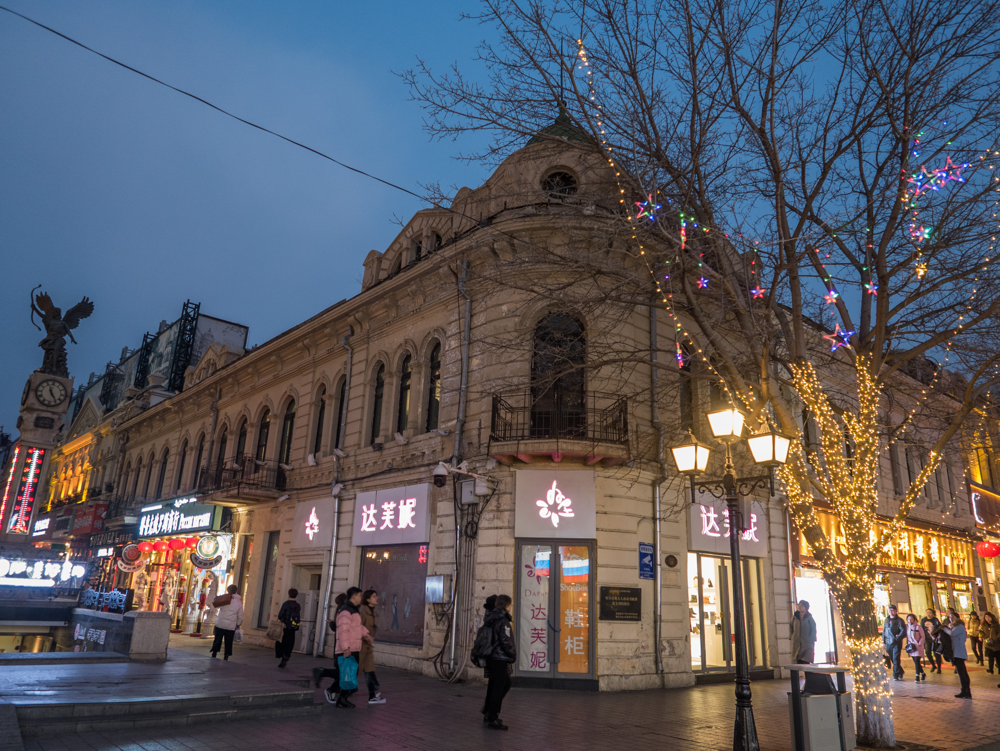

中央大街位于中国黑龙江省哈尔滨市，是一条充满浓郁欧洲建筑风格的历史文化名街，始建于1900年，全长约1400米。街道两旁矗立着各类巴洛克、新艺术运动和折衷主义风格的建筑，被誉为“亚洲第一街”。
这里不仅拥有众多国内外知名品牌店铺，还有许多特色小吃和历史悠久的老字号餐馆。夜晚时分，华灯初上，中央大街更显其独特魅力，吸引了无数游客前来观光游览。
- 马迭尔冰棍：著名的冷饮品牌，始于1906年，是中央大街上的必尝美食之一。
- 面包石路：步行街上铺设有107块方石，历经百年磨砺，独具特色。
- 索菲亚教堂：紧邻中央大街，是远东地区最大的东正教堂，为哈尔滨标志性建筑。